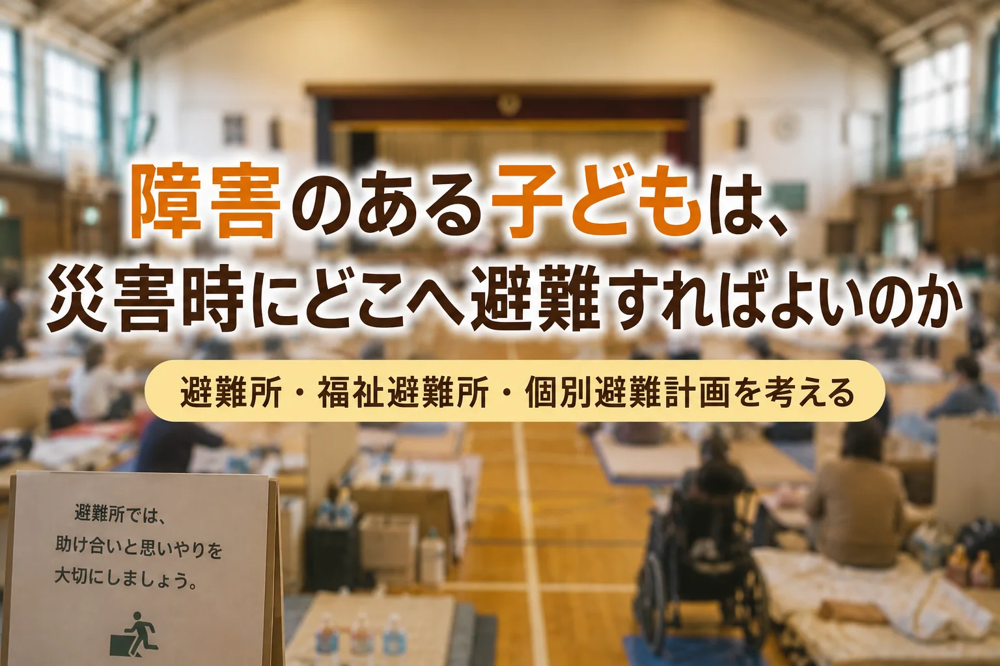

災害時の避難は、単なる「場所の移動」ではありません。
障害のある子どもと家族にとって、避難所、福祉避難所、在宅避難、個別避難計画をどう考えればよいのか。特別支援教育と保護者支援の視点から整理します。
※ 福祉避難所や個別避難計画の運用は、市区町村によって異なります。実際の避難先、利用方法、事前登録の有無、医療的ケアへの対応は、お住まいの自治体や学校、相談支援専門員、医療機関に確認してください。
災害が起きたら、避難所へ行きましょう。
そう言われる。
けれど、障害のある子どもを育てている家庭にとって、その一言は決して簡単ではない。
人が多い。
音が大きい。
照明がまぶしい。
いつ終わるのか見通しが持てない。
食べられるものが限られている。
トイレの場所や使い方が変わる。
薬や医療的ケアが必要になる。
パニックになったとき、周囲にどう見られるかわからない。
避難所は、命を守るための大切な場所である。
しかし、すべての子どもにとって、すぐに安心できる場所とは限らない。
発達特性や知的な困難、身体の不自由さ、見え方・聞こえ方の困難、病気や医療的ケアの必要がある子どもたちにとって、避難とは単なる「場所の移動」ではない。
いつもと違う場所へ行く。
いつもと違う人に囲まれる。
いつもと違う音、光、におい、空気の中で過ごす。
いつもの食事、睡眠、排泄、服薬、支援の流れが変わる。
それは、子ども本人にとっても、家族にとっても、大きな負荷になる。
私は、ここを軽く見てはいけないと思っている。
災害時に必要なのは、「避難してください」という一般論だけではない。
その子が、どこへ、誰と、どうやって、どんな配慮を受けながら避難できるのかを、平時から具体化しておくことである。
避難しづらいのは、家庭の準備不足だけではない
災害が起きたとき、避難所へ行くことに強い不安を抱える家庭がある。
これは、保護者が防災意識を持っていないからではない。
わがままだからでもない。
準備不足だけの問題でもない。
避難所の環境や仕組みが、その子の特性に合っていないことがある。
たとえば、発達障害のある子どもは、ざわざわした空間や急な予定変更に強い不安を示すことがある。知的障害のある子どもは、状況の変化を言葉だけで理解することが難しい場合がある。肢体不自由のある子どもは、移動、姿勢保持、トイレ、着替え、寝る場所に支援が必要になる。医療的ケアが必要な子どもは、電源、吸引、経管栄養、薬、衛生環境が命に直結することもある。
そのような状況で、保護者は考える。
避難所へ行った方が安全なのか。
家に残った方が落ち着くのか。
車の中で過ごすしかないのか。
親族の家へ行った方がよいのか。
福祉避難所には行けるのか。
そもそも、どこに相談すればよいのか。
この迷いは、災害が起きてから突然始まるのではない。
日ごろから、保護者の中にある。
「もし大きな地震が来たら、この子を連れて避難所に行けるだろうか」
「周りに迷惑をかけるのではないか」
「泣いたり、大声を出したりしたらどうしよう」
「薬や食事は足りるだろうか」
「自分が倒れたら、この子はどうなるのか」
こうした不安を、家庭だけで抱えさせてはいけない。
障害のある子どもの避難を考えるとき、まず必要なのは、保護者を責めないことである。
そして次に必要なのは、本人の困り方を具体的に見ることである。
一般避難所と福祉避難所は、役割が違う
災害時の避難先として、よく聞く言葉に「避難所」と「福祉避難所」がある。
この二つは、似ているようで役割が違う。
一般避難所は、地域住民が災害時に一時的に避難する場所である。多くの場合、学校の体育館、公民館、地域の施設などが指定される。
一方、福祉避難所は、一般避難所での生活が難しい高齢者や障害者などを想定した避難先である。
ただし、ここで注意したいことがある。
福祉避難所は、「災害が起きたら誰でもすぐ直接行ける場所」とは限らない。自治体によって、開設のタイミング、受け入れ対象、移動方法、事前登録の有無、一般避難所を経由するかどうかなど、運用に違いがある。
なお、令和3年の福祉避難所ガイドラインの改定では、受け入れ対象者をあらかじめ決めて公示し、指定福祉避難所へ「直接避難」できるようにする取り組みが促進されている。ただし、これも市町村ごとに準備状況や運用が異なるため、自分の地域ではどうなっているのかを確認しておくことが欠かせない。
だからこそ、平時に確認しておく必要がある。
自分の地域では、福祉避難所はどこにあるのか。
障害のある子どもは対象になるのか。
直接行ってよいのか。
まず一般避難所へ行く必要があるのか。
移動手段はどうなるのか。
医療的ケア児の場合、電源や衛生環境はどうなるのか。
「福祉避難所があるから安心」と思い込むのも危うい。
反対に、「どうせ使えない」と最初からあきらめるのも早い。
大切なのは、自分の地域の運用を知ることである。
避難先は、一つに決めなくてよい
災害時の避難先は、一つだけとは限らない。
自宅が安全で、ライフラインや物資が確保できるなら、在宅避難という選択肢もある。もちろん、倒壊、浸水、土砂災害、火災などの危険がある場合は、命を守る避難が最優先である。
ただし、避難とは必ずしも「体育館に行くこと」だけではない。
一般避難所。
福祉避難所。
自宅での在宅避難。
親族宅への避難。
知人宅への避難。
医療機関や福祉施設との連携。
車での一時避難。
ただし、車中で長時間過ごす場合には、体調管理や換気、暑さ寒さ、トイレ、血栓予防などにも注意が必要である。
その子の特性と家庭の状況に応じて、複数の選択肢を持っておくことが大切である。
たとえば、発達障害のある子どもであれば、一般避難所の大部屋よりも、車や親族宅の方が落ち着ける場合がある。肢体不自由のある子どもであれば、床に雑魚寝する環境では体位変換や排泄支援が難しい場合がある。医療的ケアが必要な子どもであれば、電源確保と医療機関との連絡が優先される。
つまり、避難計画は「みんなと同じ避難先を決めること」ではない。
その子が安全に過ごせる避難の形を、複数考えておくことである。
個別避難計画は、紙ではなく「具体的な約束」である
近年、災害時の支援で重要になっているのが、個別避難計画である。
個別避難計画とは、災害時に一人では避難することが難しい人について、避難先、避難方法、支援者、必要な配慮などをあらかじめ整理する計画である。令和3年の災害対策基本法改正により、市町村には避難行動要支援者名簿に記載された人ごとに個別避難計画を作成するよう努めることが求められている。
ただし、ここでも大事なのは、書類を作ること自体が目的ではないということである。
個別避難計画は、紙ではない。
具体的な約束である。
誰が連絡するのか。
誰が迎えに行くのか。
どこへ避難するのか。
薬は誰が持つのか。
医療的ケアの物品はどこに置くのか。
パニックになったとき、どのように声をかけるのか。
苦手な音や光をどう避けるのか。
食べられるものは何か。
排泄や着替えにはどのような支援が必要か。
保護者が不在だった場合、誰が判断するのか。
こうしたことを、災害が起きる前に言葉にしておく。
それが、個別避難計画の本質である。
計画があっても、関係者が知らなければ動けない。
計画があっても、古い情報のままでは役に立たない。
計画があっても、本人の特性が具体的に書かれていなければ、現場では使いにくい。
だから、個別避難計画は、作って終わりではない。
本人の成長、体調、服薬、通学先、福祉サービス、家庭状況の変化に合わせて、見直していく必要がある。
防災は、防災担当者だけの仕事ではない
障害のある子どもの防災を考えるとき、学校や福祉の役割は大きい。
防災というと、自治体、防災担当者、地域の自主防災組織の仕事のように見えるかもしれない。もちろん、それらの役割は重要である。
しかし、障害のある子どもについては、日ごろその子を見ている人たちの情報が欠かせない。
特別支援学校。
特別支援学級。
通級指導教室。
放課後等デイサービス。
相談支援専門員。
訪問看護。
医療機関。
福祉事業所。
地域の支援者。
そして家族。
これらの人たちが持っている情報は、避難計画にとって極めて重要である。
大きな音が苦手。
見通しがないと混乱する。
初めての場所では眠れない。
偏食が強い。
排泄支援が必要。
移動に時間がかかる。
姿勢保持が必要。
薬の時間が決まっている。
人に触られると強く拒否する。
落ち着くための道具がある。
こうした情報は、災害時には命と生活を守る情報になる。
防災教育は、「地震が来たら机の下にもぐりましょう」だけではない。
障害のある子どもにとっては、自分の困り方を知り、助けを求める方法を学び、支援者とつながる力を育てることも、防災教育である。
特別支援教育の視点から見る「避難のしづらさ」
私は、災害時の支援を考えるとき、「避難できるか、できないか」だけで見てはいけないと思っている。
大事なのは、避難のしづらさである。
避難のしづらさは、本人の障害だけで決まるのではない。
環境との関係で生まれる。
たとえば、音に敏感な子どもにとって、避難所のざわめきは大きな負担になる。
けれど、静かなスペースがあれば過ごせるかもしれない。
見通しがないと不安になる子どもにとって、突然の集団移動は混乱の原因になる。
けれど、写真や絵カード、短い言葉で予定を伝えれば動けるかもしれない。
偏食の強い子どもにとって、支給された食事が食べられないことは深刻である。
けれど、家庭で食べられるものを備えておけば、数日をしのげるかもしれない。
医療的ケアが必要な子どもにとって、電源がないことは命に関わる。
けれど、事前に電源確保や医療機関との連絡手段を確認しておけば、選択肢が広がるかもしれない。
つまり、避難のしづらさは、工夫によって小さくできる。
本人を変えるのではない。
環境と支援の組み合わせを変えるのである。
これは、特別支援教育の考え方と重なる。
子どもに「我慢しなさい」と言うだけではなく、その子が参加しやすくなる環境を整える。
できないことだけを見るのではなく、できる条件を探す。
困りごとを本人や家庭の責任にせず、周囲との関係の中で考える。
災害時支援にも、この視点が必要である。
家庭で準備しておきたい「避難メモ」
災害時に必要なのは、防災グッズだけではない。
もちろん、水、食料、ライト、電池、モバイルバッテリー、簡易トイレ、薬、衛生用品などは重要である。けれど、障害のある子どもの場合、それだけでは足りないことがある。
必要なのは、本人の情報を簡潔に伝えられる「避難メモ」である。
避難所や支援先で、保護者がすべてを口で説明できるとは限らない。災害時は、保護者自身も混乱している。疲れている。スマートフォンの電池が切れているかもしれない。支援者が交代することもある。
そのとき、本人についての基本情報が一枚にまとまっていると、支援がつながりやすくなる。
たとえば、次のような項目である。
- 本人の名前
- 年齢
- 診断名や障害名
- 連絡先
- 服薬
- 医療的ケア
- アレルギー
- 食べられるもの、食べられないもの
- 苦手な音、光、におい、触られ方
- パニックになりやすい場面
- 落ち着きやすい方法
- 使っているコミュニケーション方法
- トイレ、着替え、移動に必要な支援
- 本人が安心する言葉
- 避けてほしい対応
- かかりつけ医
- 利用している福祉サービス
- 避難先候補
大事なのは、長すぎないことである。
災害時に読む人が、すぐ理解できること。
本人の尊厳を傷つけない書き方にすること。
古い情報のままにしないこと。
この避難メモは、家庭だけで作る必要はない。
学校、放課後等デイサービス、相談支援専門員、医療機関などと相談しながら作る方がよい。家庭で見える姿と、学校や福祉の場で見える姿は違うからである。
「迷惑をかけるから避難しない」は、危険な我慢である
障害のある子どもの保護者は、周囲に気を遣う。
子どもが大きな声を出したらどうしよう。
走り回ったらどうしよう。
泣き止まなかったらどうしよう。
夜中に眠れなかったら、周りに迷惑をかけるのではないか。
トイレや食事で手間取ったら、嫌な顔をされるのではないか。
そう考えて、避難所へ行くことをためらう家庭がある。
その気持ちは、よくわかる。
けれど、「迷惑をかけるから避難しない」という選択が、命の危険につながることもある。倒壊の恐れがある家、浸水の危険がある地域、土砂災害の恐れがある場所に残ることは、本人にも家族にも危険である。
だからこそ、社会の側が変わらなければならない。
障害のある子どもと家族が、「迷惑をかけるから行けない」と思わなくてよい避難の仕組みを作る必要がある。
静かなスペースを用意する。
段ボール間仕切りやテントを活用する。
視覚的にわかる案内を置く。
障害特性を伝えられるカードを使う。
保護者が少し休めるようにする。
福祉や医療につなぐ窓口を明確にする。
地域の人が、障害のある子どもの困り方を知っておく。
これは、特別扱いではない。
命を守るための合理的な配慮である。
学校は「避難訓練」で終わらせてはいけない
学校では、避難訓練が行われる。
それ自体は大切である。
地震が起きたときに身を守る。
火災時に避難する。
先生の指示を聞く。
安全な場所へ移動する。
しかし、障害のある子どもの防災は、避難訓練だけでは足りない。
訓練では落ち着いて動けても、本当の災害では音、揺れ、停電、人の叫び声、物の落下、家族と離れる不安が重なる。予定通りに進まない。先生が近くにいないかもしれない。保護者と連絡が取れないかもしれない。
だから、学校で必要なのは、「避難できたかどうか」の確認だけではない。
その子は、何があると動けなくなるのか。
どの声かけなら伝わるのか。
どの支援者だと安心するのか。
視覚支援は必要か。
音への配慮は必要か。
薬や医療的ケアの情報は共有されているか。
保護者への引き渡しができない場合、どうするのか。
そこまで考えておく必要がある。
特別支援教育における防災教育は、単なる安全指導ではない。
災害時に、その子が自分の命を守り、支援を受けながら生活を続けるための学びである。
地域防災に、子どもの情報をどうつなぐか
障害のある子どもの災害時支援は、学校の中だけでは完結しない。
学校にいる時間に災害が起きるとは限らない。
登下校中かもしれない。
放課後等デイサービスにいるかもしれない。
自宅にいるかもしれない。
親族宅にいるかもしれない。
外出中かもしれない。
だから、学校、家庭、福祉、地域の情報をつなぐ必要がある。
ただし、個人情報の扱いには注意が必要である。誰に、どこまで、どのように伝えるか。本人と保護者の同意をどう取るか。情報が古くならないように、誰が更新するか。
ここは慎重に考えなければならない。
それでも、何も共有しないままでは、災害時に支援が届きにくい。
本人の命を守るために必要な情報を、必要な範囲で、必要な人に共有する。
その線引きを、平時に話し合っておく。
これが大切である。
保護者だけで抱えないために
災害時の備えを考えると、保護者は苦しくなる。
あれも準備しなければ。
これも確認しなければ。
薬も、食事も、電源も、避難先も、連絡先も、全部考えなければ。
そう思うほど、負担は大きくなる。
けれど、障害のある子どもの災害時支援は、保護者だけで抱えるものではない。
家庭には家庭の役割がある。
学校には学校の役割がある。
福祉には福祉の役割がある。
医療には医療の役割がある。
地域には地域の役割がある。
行政には行政の役割がある。
その役割を重ね合わせることが必要である。
保護者は、すべてを完璧に準備しなくてよい。
ただし、何に困りそうかを言葉にする必要はある。
「この子は大きな音が苦手です」
「初めての場所では眠れません」
「食べられるものが限られています」
「薬は一日三回必要です」
「パニック時に強く叱ると逆効果です」
「この言葉で伝えると落ち着きます」
こうした情報は、災害時に周囲が支援するための手がかりになる。
困りごとを言葉にすることは、迷惑をかけることではない。
支援を可能にすることである。
まず確認しておきたいこと
この記事を読んだからといって、すべてを一度に準備する必要はない。
まずは、次の五つから確認しておくとよい。
- 自宅周辺に、倒壊・浸水・土砂災害などの危険があるか
- 指定避難所はどこか
- 福祉避難所の場所と利用方法はどうなっているか
- 本人に必要な薬・食事・医療的ケア用品は何日分あるか
- 学校・福祉事業所・相談支援専門員と、災害時の連絡方法を確認しているか
完璧な計画を一度で作る必要はない。
まず、家族だけで抱えていた不安を、学校や福祉、地域の人と共有するところから始めればよい。
避難できる子にするのではなく、避難しやすい社会にする
災害時、障害のある子どもに必要なのは、「我慢して避難所に適応する力」だけではない。
もちろん、本人が学べることはある。
落ち着く方法を知る。
助けを求める。
避難の流れを練習する。
自分の苦手を少しずつ伝える。
それは大切である。
しかし、それだけでは足りない。
社会の側も変わる必要がある。
避難所の環境を整える。
福祉避難所の運用をわかりやすくする。
個別避難計画を実効性のあるものにする。
学校と福祉と地域が情報を持ち寄る。
保護者だけに負担を押しつけない。
障害のある子どもがいることを前提に、地域防災を考える。
災害は、誰にでも起こる。
しかし、災害時に受ける困難は、誰にとっても同じではない。
だからこそ、平時からの備えが必要である。
防災とは、非常食をそろえることだけではない。
避難訓練をすることだけでもない。
誰が困りやすいのか。
どこで支援が途切れやすいのか。
どんな情報があれば助けられるのか。
どんな環境なら安心できるのか。
それを、災害が起きる前に考えておくことだ。
障害のある子どもは、災害時にどこへ避難すればよいのか。
その答えは、一つではない。
一般避難所かもしれない。
福祉避難所かもしれない。
自宅かもしれない。
親族宅かもしれない。
医療機関や福祉施設との連携かもしれない。
大切なのは、「そのとき考える」のではなく、平時から選択肢を持っておくことである。
そして、その選択肢を家庭だけで抱えないことである。
子どもを避難に合わせるだけではなく、避難の仕組みを子どもに近づける。
それが、障害のある子どもと家族の命と暮らしを守るために、今必要な視点ではないかと私は思う。